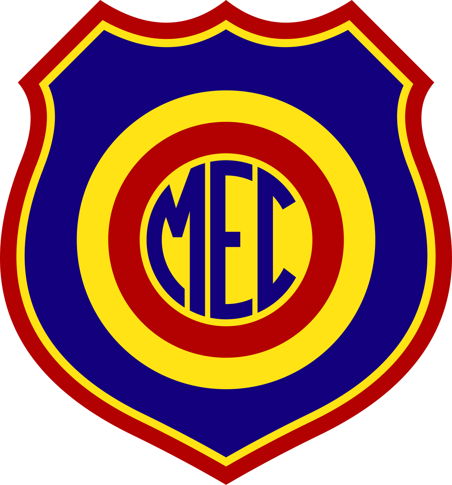
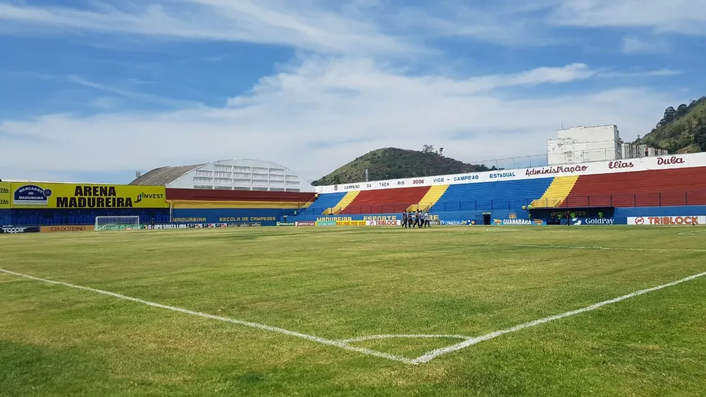

O Estádio Aniceto Moscoso ou Estádio da Rua Conselheiro Galvão é uma praça esportiva localizada em Madureira, no município do Rio de Janeiro, inaugurada em 15 de junho de 1941 com capacidade então para receber cerca de 10 mil pessoas. Em 2016 tinha capacidade oficial limitada para 2.136 pessoas, de acordo com a Confederação Brasileira de Futebol, por razões de segurança, em 2020 estando liberado pelo Corpo de Bombeiros para receber 5.014 torcedores.
O nome é uma homenagem a Aniceto Moscoso, um conhecido contraventor brasileiro da década de 30. Um dos grandes do cenário carioca. Em parceria com outros empresários das diversões e jogos da época como Arlindo Pimenta, Rafael Palermo e Eusébio de Andrade, pai de Castor de Andrade, investia em diversas atividades tidas como higiênicas na cidade, como os jogos de futebol. O jogo inaugural do estádio a qual carrega o seu nome, foi entre Madureira e Fluminense, com vitória do Madureira Esporte Clube por 4 a 2 em cima do tricolor, perante 10.762 torcedores pagantes. O maior público conhecido foi de 11.714 pagantes na partida Madureira 1 a 3 Fluminense em 10 de setembro de 1944. Em 2011, recebeu aproximadamente 2.500 cadeiras do Estádio do Maracanã.